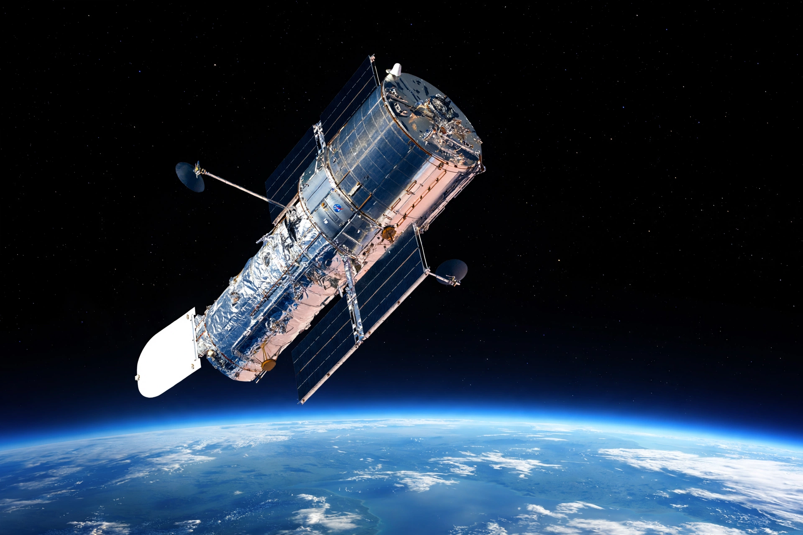

From Wikipedia, the free encyclopedia
| Hubble Space Telescope | |
|---|---|
| Operator | NASA / ESA |
| Launch | 24 April 1990, Space Shuttle Discovery |
| Orbit | Low Earth orbit, about 540 km |
| Mirror | 2.4 m primary |

The Hubble Space Telescope is a space telescope launched into low Earth orbit in 1990 and still operating. Named after astronomer Edwin Hubble, it observes in ultraviolet, visible and near-infrared light, free of the distortion of Earth's atmosphere, and has produced some of the most detailed and famous images in astronomy.
A flaw in its main mirror caused spherical aberration, famously corrected by astronauts on the first servicing mission in 1993; four further servicing missions upgraded its instruments. Hubble measured the expansion rate of the universe, found most galaxies contain central black holes, and took deep-field images revealing thousands of distant galaxies. Its scientific successor, with complementary infrared capability, is the James Webb Space Telescope.